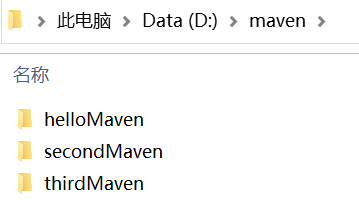

Maven自动化构建
Maven 自动化构建是一种方案，即当某个项目构建完成后（特别是有代码更新的情况下），所有依赖它的相关项目也应该开始构建过程，以确保这些项目的稳定运行。
Maven 的自动化构建主要通过如下两种方案实现：
如下图所示，在 D:\maven 目录下有 3 个 Maven 项目。
其中，helloMaven 项目的 pom.xml 配置如下。
以上配置中，在 build 的 plugins 子元素中使用了一个 plugin 元素声明了一个构建期的插件 maven-invoker-plugin，该插件配置中各元素含义如下：
secondMaven 项目依赖于 helloMaven ，其 pom.xml 配置如下。
thirdMaven 项目依赖于 helloMaven ，其 pom.xml 配置如下。
打开命令控制台，执行如下命令，查看 maven-invoker-plugin 插件绑定的目标。
Maven 命令执行结果如下。
由以上执行结果可知，maven-invoker-plugin 插件绑定的 Maven 生命周期阶段为 integration-test 及其以后，所以执行 integration-test 阶段及其以后的都可以触发该插件。
跳转到 D:\maven\helloMaven 目录下，执行如下 Maven 命令。
执行结果如下。
通过以上执行过程可以看到，在 helloMaven 构建完成后， Invoker 插件对 secondMaven 和 thirdMaven 也进行了构建。
Maven 的自动化构建主要通过如下两种方案实现：
- 使用 maven-invoker-plugin 插件。
- 使用持续集成（CI）服务器自动管理构建自动化，例如 Jenkins （了解即可）。
使用 maven-invoker-plugin 插件
Maven 社区提供了一个名为 maven-invoker-plugin 的插件，该插件能够用来在一组项目上执行构建工作，并检查每个项目是否构建成功，通过它就可以实现 Maven 的自动化构建。如下图所示，在 D:\maven 目录下有 3 个 Maven 项目。

其中，helloMaven 项目的 pom.xml 配置如下。
<project xmlns="http://maven.apache.org/POM/4.0.0"
xmlns:xsi="http://www.w3.org/2001/XMLSchema-instance"
xsi:schemaLocation="http://maven.apache.org/POM/4.0.0 http://maven.apache.org/maven-v4_0_0.xsd">
<modelVersion>4.0.0</modelVersion>
<groupId>net.biancheng.www</groupId>
<artifactId>helloMaven</artifactId>
<packaging>jar</packaging>
<version>1.0-SNAPSHOT</version>
<name>helloMaven</name>
<url>http://maven.apache.org</url>
<dependencies>
<dependency>
<groupId>junit</groupId>
<artifactId>junit</artifactId>
<version>3.8.1</version>
<scope>test</scope>
</dependency>
</dependencies>
<build>
<plugins>
<!-- 添加invoker 插件 -->
<plugin>
<groupId>org.apache.maven.plugins</groupId>
<artifactId>maven-invoker-plugin</artifactId>
<version>3.2.2</version>
<configuration>
<debug>true</debug>
<!--设置 invkoer插件 添加的 pom 文件所在的文件夹 -->
<projectsDirectory>D:\maven</projectsDirectory>
<!-- 设置 invkoer插件 添加的 pom 文件 -->
<pomIncludes>
<pomInclude>secondMaven\pom.xml</pomInclude>
<pomInclude>thirdMaven\pom.xml</pomInclude>
</pomIncludes>
</configuration>
<executions>
<execution>
<id>id-integration-test</id>
<!-- 执行的目标 -->
<goals>
<goal>run</goal>
</goals>
</execution>
</executions>
</plugin>
</plugins>
</build>
</project>
以上配置中，在 build 的 plugins 子元素中使用了一个 plugin 元素声明了一个构建期的插件 maven-invoker-plugin，该插件配置中各元素含义如下：
- groupId：插件的项目组 id;
- artifactId：插件的项目或模块 id；
- version：插件的版本；
- projectsDirectory：需要构建项目的目录，该元素可单独使用，表示该目录下的所有 Maven 项目都会在当前项目构建完成后开始构建；
- pomIncludes：该元素内可以声明一个或多个 pomInclude 元素，需与 projectDirectory 元素配合使用，共同指定需要构建项目的 pom.xml。
secondMaven 项目依赖于 helloMaven ，其 pom.xml 配置如下。
<project xmlns="http://maven.apache.org/POM/4.0.0" xmlns:xsi="http://www.w3.org/2001/XMLSchema-instance"
xsi:schemaLocation="http://maven.apache.org/POM/4.0.0 http://maven.apache.org/maven-v4_0_0.xsd">
<modelVersion>4.0.0</modelVersion>
<groupId>net.biancheng.www</groupId>
<artifactId>secondMaven</artifactId>
<packaging>jar</packaging>
<version>1.0-SNAPSHOT</version>
<name>secondMaven</name>
<url>http://maven.apache.org</url>
<build>
<plugins>
<plugin>
<groupId>org.apache.maven.plugins</groupId>
<artifactId>maven-site-plugin</artifactId>
<version>3.7.1</version>
</plugin>
<plugin>
<groupId>org.apache.maven.plugins</groupId>
<artifactId>maven-project-info-reports-plugin</artifactId>
<version>3.0.0</version>
</plugin>
</plugins>
</build>
<dependencies>
<dependency>
<groupId>junit</groupId>
<artifactId>junit</artifactId>
<version>3.8.1</version>
<scope>test</scope>
</dependency>
<dependency>
<groupId>net.biancheng.www</groupId>
<artifactId>helloMaven</artifactId>
<scope>system</scope>
<version>1.0-SNAPSHOT</version>
<systemPath>D:\maven\helloMaven\target\helloMaven-1.0-SNAPSHOT.jar</systemPath>
</dependency>
</dependencies>
</project>
thirdMaven 项目依赖于 helloMaven ，其 pom.xml 配置如下。
<?xml version="1.0" encoding="UTF-8"?>
<project xmlns="http://maven.apache.org/POM/4.0.0" xmlns:xsi="http://www.w3.org/2001/XMLSchema-instance"
xsi:schemaLocation="http://maven.apache.org/POM/4.0.0 http://maven.apache.org/xsd/maven-4.0.0.xsd">
<modelVersion>4.0.0</modelVersion>
<groupId>net.biancheng.www</groupId>
<artifactId>thirdMaven</artifactId>
<version>1.0-SNAPSHOT</version>
<name>thirdMaven</name>
<!-- FIXME change it to the project's website -->
<url>http://www.example.com</url>
<properties>
<project.build.sourceEncoding>UTF-8</project.build.sourceEncoding>
<maven.compiler.source>1.7</maven.compiler.source>
<maven.compiler.target>1.7</maven.compiler.target>
</properties>
<dependencies>
<dependency>
<groupId>junit</groupId>
<artifactId>junit</artifactId>
<version>4.11</version>
<scope>test</scope>
</dependency>
<dependency>
<groupId>net.biancheng.www</groupId>
<artifactId>helloMaven</artifactId>
<version>1.0-SNAPSHOT</version>
</dependency>
</dependencies>
<build>
<pluginManagement>
<plugins>
<plugin>
<artifactId>maven-clean-plugin</artifactId>
<version>3.1.0</version>
</plugin>
<plugin>
<artifactId>maven-resources-plugin</artifactId>
<version>3.0.2</version>
</plugin>
<plugin>
<artifactId>maven-compiler-plugin</artifactId>
<version>3.8.0</version>
</plugin>
<plugin>
<artifactId>maven-surefire-plugin</artifactId>
<version>2.22.1</version>
</plugin>
<plugin>
<artifactId>maven-jar-plugin</artifactId>
<version>3.0.2</version>
</plugin>
<plugin>
<artifactId>maven-install-plugin</artifactId>
<version>2.5.2</version>
</plugin>
<plugin>
<artifactId>maven-deploy-plugin</artifactId>
<version>2.8.2</version>
</plugin>
<plugin>
<artifactId>maven-site-plugin</artifactId>
<version>3.7.1</version>
</plugin>
<plugin>
<artifactId>maven-project-info-reports-plugin</artifactId>
<version>3.0.0</version>
</plugin>
</plugins>
</pluginManagement>
</build>
</project>
打开命令控制台，执行如下命令，查看 maven-invoker-plugin 插件绑定的目标。
>mvn help:describe -Dplugin=invoker
Maven 命令执行结果如下。
[INFO] Scanning for projects...
[INFO]
[INFO] ------------------< org.apache.maven:standalone-pom >-------------------
[INFO] Building Maven Stub Project (No POM) 1
[INFO] --------------------------------[ pom ]---------------------------------
[INFO]
[INFO] --- maven-help-plugin:3.2.0:describe (default-cli) @ standalone-pom ---
Downloading from central: https://repo.maven.apache.org/maven2/org/apache/maven/plugins/maven-invoker-plugin/maven-metadata.xml
Downloaded from central: https://repo.maven.apache.org/maven2/org/apache/maven/plugins/maven-invoker-plugin/maven-metadata.xml (888 B at 539 B/s)
[INFO] org.apache.maven.plugins:maven-invoker-plugin:3.2.2
Name: Apache Maven Invoker Plugin
Description: The Maven Invoker Plugin is used to run a set of Maven projects.
The plugin can determine whether each project execution is successful, and
optionally can verify the output generated from a given project execution.
Group Id: org.apache.maven.plugins
Artifact Id: maven-invoker-plugin
Version: 3.2.2
Goal Prefix: invoker
This plugin has 6 goals:
invoker:help
Description: Display help information on maven-invoker-plugin.
Call mvn invoker:help -Ddetail=true -Dgoal=<goal-name> to display parameter
details.
invoker:install
Description: Installs the project artifacts of the main build into the
local repository as a preparation to run the sub projects. More precisely,
all artifacts of the project itself, all its locally reachable parent POMs
and all its dependencies from the reactor will be installed to the local
repository.
invoker:integration-test
Description: Searches for integration test Maven projects, and executes
each, collecting a log in the project directory, will never fail the build,
designed to be used in conjunction with the verify mojo.
invoker:report
Description: Generate a report based on the results of the Maven
invocations. Note: This mojo doesn't fork any lifecycle, if you have a
clean working copy, you have to use a command like mvn clean
integration-test site to ensure the build results are present when this
goal is invoked.
Note: This goal should be used as a Maven report.
invoker:run
Description: Searches for integration test Maven projects, and executes
each, collecting a log in the project directory, and outputting the results
to the command line.
invoker:verify
Description: Checks the results of maven-invoker-plugin based integration
tests and fails the build if any tests failed.
For more information, run 'mvn help:describe [...] -Ddetail'
[INFO] ------------------------------------------------------------------------
[INFO] BUILD SUCCESS
[INFO] ------------------------------------------------------------------------
[INFO] Total time: 4.467 s
[INFO] Finished at: 2021-03-05T10:03:15+08:00
[INFO] ------------------------------------------------------------------------
由以上执行结果可知，maven-invoker-plugin 插件绑定的 Maven 生命周期阶段为 integration-test 及其以后，所以执行 integration-test 阶段及其以后的都可以触发该插件。
跳转到 D:\maven\helloMaven 目录下，执行如下 Maven 命令。
mvn clean install
执行结果如下。
[INFO] Scanning for projects... [INFO] [INFO] --------------------< net.biancheng.www:helloMaven >-------------------- [INFO] Building helloMaven 1.0-SNAPSHOT [INFO] --------------------------------[ jar ]--------------------------------- [INFO] [INFO] --- maven-clean-plugin:2.5:clean (default-clean) @ helloMaven --- [INFO] Deleting d:\maven\helloMaven\target [INFO] [INFO] --- maven-resources-plugin:2.6:resources (default-resources) @ helloMaven --- [WARNING] Using platform encoding (GBK actually) to copy filtered resources, i.e. build is platform dependent! [INFO] skip non existing resourceDirectory d:\maven\helloMaven\src\main\resources [INFO] [INFO] --- maven-compiler-plugin:3.1:compile (default-compile) @ helloMaven --- [INFO] Changes detected - recompiling the module! [WARNING] File encoding has not been set, using platform encoding GBK, i.e. build is platform dependent! [INFO] Compiling 2 source files to d:\maven\helloMaven\target\classes [INFO] [INFO] --- maven-resources-plugin:2.6:testResources (default-testResources) @ helloMaven --- [WARNING] Using platform encoding (GBK actually) to copy filtered resources, i.e. build is platform dependent! [INFO] skip non existing resourceDirectory d:\maven\helloMaven\src\test\resources [INFO] [INFO] --- maven-compiler-plugin:3.1:testCompile (default-testCompile) @ helloMaven --- [INFO] Changes detected - recompiling the module! [WARNING] File encoding has not been set, using platform encoding GBK, i.e. build is platform dependent! [INFO] Compiling 1 source file to d:\maven\helloMaven\target\test-classes [INFO] [INFO] --- maven-surefire-plugin:2.12.4:test (default-test) @ helloMaven --- [INFO] Surefire report directory: d:\maven\helloMaven\target\surefire-reports ------------------------------------------------------- T E S T S ------------------------------------------------------- Running net.biancheng.www.AppTest Tests run: 1, Failures: 0, Errors: 0, Skipped: 0, Time elapsed: 0.008 sec Results : Tests run: 1, Failures: 0, Errors: 0, Skipped: 0 [INFO] [INFO] --- maven-jar-plugin:2.4:jar (default-jar) @ helloMaven --- [INFO] Building jar: d:\maven\helloMaven\target\helloMaven-1.0-SNAPSHOT.jar [INFO] [INFO] --- maven-invoker-plugin:3.2.2:run (id-integration-test) @ helloMaven --- [WARNING] File encoding has not been set, using platform encoding GBK, i.e. build is platform dependent! [WARNING] Filtering of parent/child POMs is not supported without cloning the projects [INFO] Building: secondMaven\pom.xml [INFO] secondMaven\pom.xml .............................. SUCCESS (2.6 s) [INFO] Building: thirdMaven\pom.xml [INFO] thirdMaven\pom.xml ............................... SUCCESS (3.7 s) [INFO] ------------------------------------------------- [INFO] Build Summary: [INFO] Passed: 2, Failed: 0, Errors: 0, Skipped: 0 [INFO] ------------------------------------------------- [INFO] [INFO] --- maven-install-plugin:2.4:install (default-install) @ helloMaven --- [INFO] Installing d:\maven\helloMaven\target\helloMaven-1.0-SNAPSHOT.jar to D:\myRepository\repository\net\biancheng\www\helloMaven\1.0-SNAPSHOT\helloMaven-1.0-SNAPSHOT.jar [INFO] Installing d:\maven\helloMaven\pom.xml to D:\myRepository\repository\net\biancheng\www\helloMaven\1.0-SNAPSHOT\helloMaven-1.0-SNAPSHOT.pom [INFO] ------------------------------------------------------------------------ [INFO] BUILD SUCCESS [INFO] ------------------------------------------------------------------------ [INFO] Total time: 9.335 s [INFO] Finished at: 2021-03-05T10:20:26+08:00 [INFO] ------------------------------------------------------------------------
通过以上执行过程可以看到，在 helloMaven 构建完成后， Invoker 插件对 secondMaven 和 thirdMaven 也进行了构建。
注意：secondMaven 和 thirdMaven 是否依赖于 helloMaven，不会影响 Invoker 插件是否对它们进行构建。即使 secondMaven 和 thirdMaven 都不依赖于 helloMaven，只要在 Invoker 插件中配置了这些项目，Invoker 插件也依然会在 helloMaven 构建完成后，对它们进行构建。
关注公众号「站长严长生」，在手机上阅读所有教程，随时随地都能学习。内含一款搜索神器，免费下载全网书籍和视频。

微信扫码关注公众号